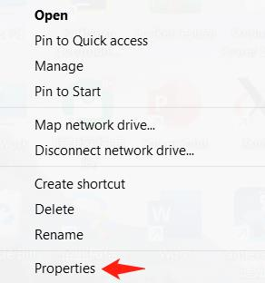
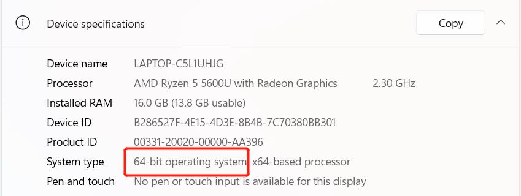
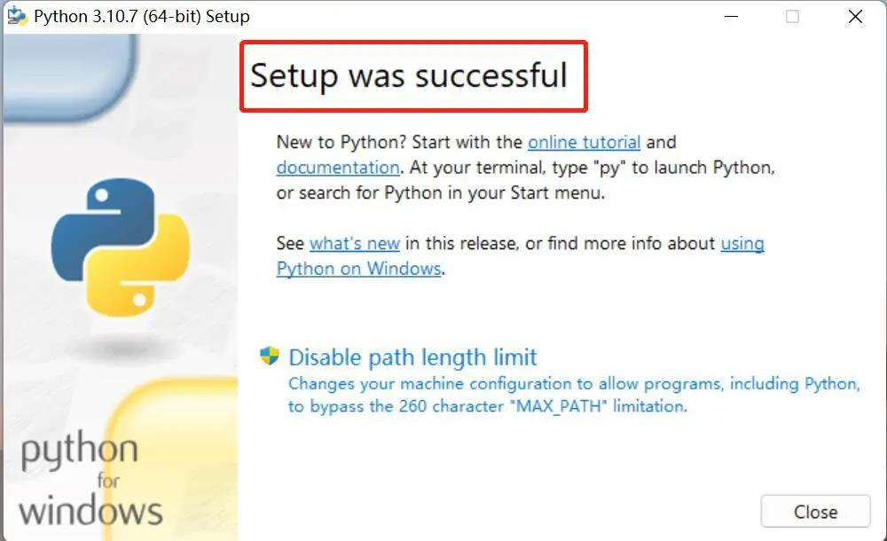
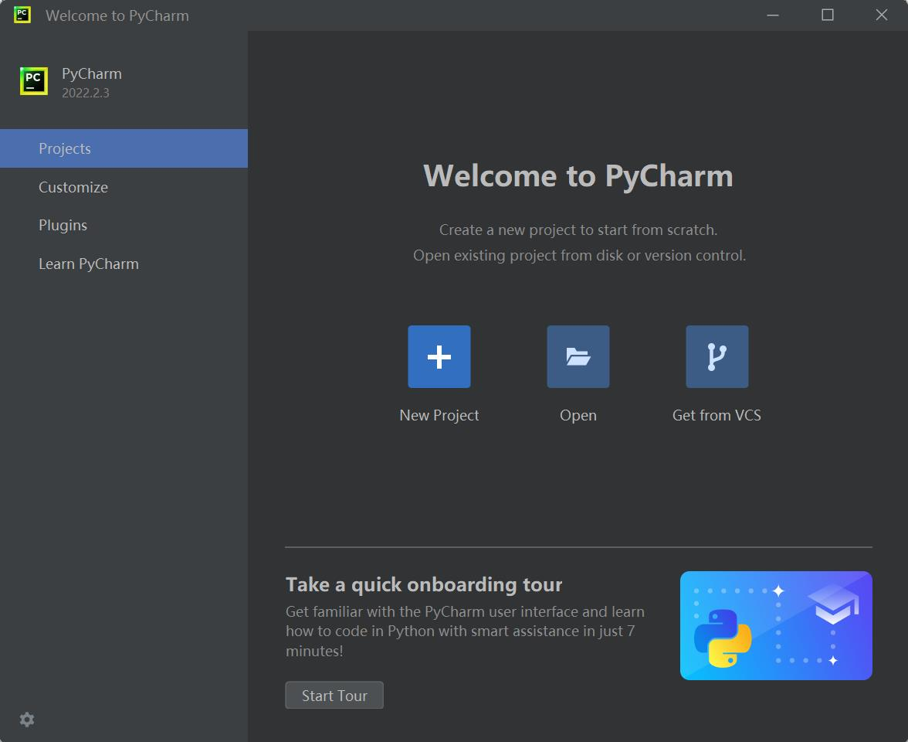
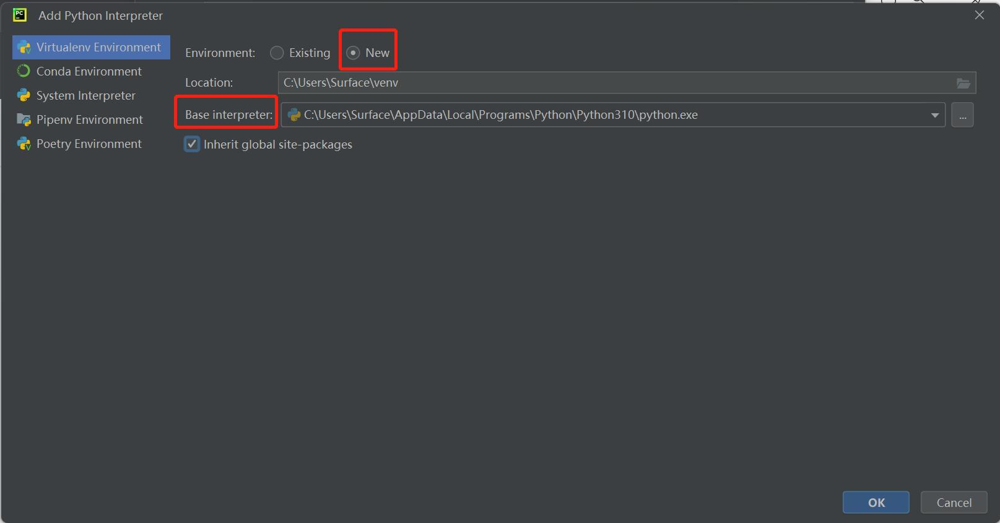
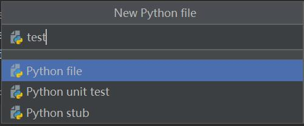
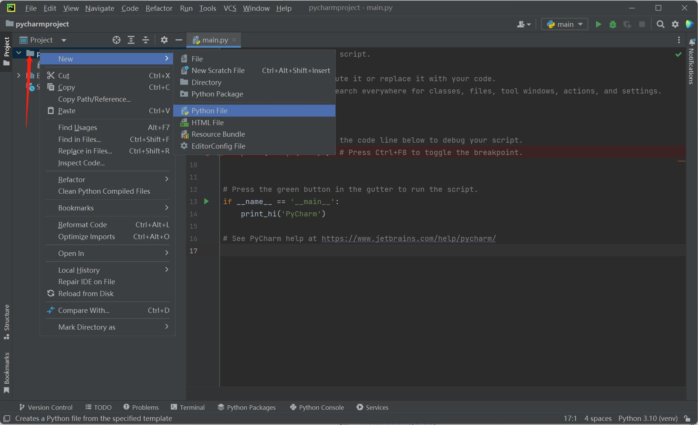

1. Environment setup
pymycobot is a Python package for serial communication with myCobot, supporting Python2, Python3.5 and later versions.
Before using pymycobot to control the robot arm, you need to build a Python environment. The following is a detailed description of Python download and installation.
1.1. 1 Download and install Python
Applicable devices:
myCobot 280:
myCobot 280 M5
myCobot 280 PI
myCobot 280 Jetson Nano
myCobot 280 for Arduino
myCobot 320:
myCobot 320 M5
myCobot 320 PI
myPalletizer 260:
myPalletizer 260 M5
myPalletizer 260 PI
mechArm-270:
mechArm-270 M5
mechArm-270 PI
Currently, there are two versions of Python, one is 2.x version and the other is 3.x version. These two versions are incompatible. As 3.x version is becoming more and more popular, our tutorial will take the latest 3.10.7 version as an example.
1.1.1. 1.1 Install Python
Note: Before installing, please confirm whether your computer is 64-bit or 32-bit. Right-click
My Computerand selectProperties. As shown in the figure below, it is a 64-bit operating system, so select the 64-bit Python installation package.

Python official download address: https://www.python.org/downloads/
Click the
Downloadsoption to start downloading Python, clickAdd Python 3.10 to PATH, clickInstall Nowto start installing Python


The prompt "Setup was successful" appears, indicating that the installation is complete

1.1.2. 1.2 Run Python
After successful installation, open the command prompt window (Win+R, enter cmd and press Enter), and type python. Two situations will occur.
Situation 1:

The prompt in the picture indicates that Python has been successfully installed.
The prompt >>> indicates that we are already in the Python interactive environment. We can enter any Python code and get the execution result immediately after pressing Enter.
Case 2:
If the input is wrong (for example, enter pythonn), an error message will appear:

Note: The error message is generally caused by not configuring the environment variables. You can refer to 1.3 Configure environment variables to modify the environment variables.
1.1.3. 1.3 Configure environment variables
Since Windows will search for python.exe according to the path set by a Path environment variable, if it is not found, an error will be reported. Therefore, if you miss checking Add Python 3.10 to PATH during installation, you need to manually add the path where python.exe is located to Path, or reinstall Python and remember to check the Add Python 3.10 to PATH option.
The following are the steps to manually add the path where python.exe is located.
- Right-click My Computer –> Select Properties –> Select Advanced System Settings –> Select Environment Variables in the lower right corner:

- Environment variables mainly include user variables and system variables. The environment variables that need to be set are in these two variables. As shown in the figure below:

- User variables are used to download programs that can be used in cmd commands. Write the absolute path of the program to the user variable and you can use it, as shown in the figure below:

- After completing the above steps, open the command prompt window (Win+R, then enter cmd, press Enter), type Python, and the prompt in the figure below indicates success:

1.2. 2 PyCharm installation and use
PyCharm is a powerful Python editor with cross-platform capabilities. First, let's introduce the installation steps of PyCharm in Windows system.
Download address: https://www.jetbrains.com/pycharm/download/#section=windows
1.2.1. 2.1 Download and install
- After entering the website, we will see the following interface:

Download the file according to the interface introduction. Professional means professional version, and Community means community version. It is recommended to install the community version because it is free to use.
- After downloading, start installing and click
Next:

- Select the corresponding options according to your personal preferences, and then click
Next:

- The following interface appears and continue to click
Next:

- Click
Finishto complete the installation:

1.2.2. 2.2 Create a project
After PyCharm is installed, enter the software and create the first program.
- Click the PyCharm icon on the desktop to enter PyCharm, as shown in the figure below, and click
New Project:

- After clicking, find
Interpreter, start setting the interpreter, and clickAdd Interpreter:

- Click
New, find the python.exe storage location, and check theInherit global site-packageoption:

- Set
Location. Location is where the PyCharm project is stored. You can choose it according to your needs.

- Create a new PyCharm file. Right-click the document icon pointed by the arrow, click
New, clickPython File, and the new file is created successfully.

- Name Python File:

- After the file is successfully created, you will enter the following interface and you can write your own program

1.2.3. 2.3 Before use
- Firmware burning. Firmware refers to the device "driver" stored inside the device. Only through firmware can the operating system implement the operation of a specific machine according to the standard device driver. Different versions of the robot arm need to burn different firmware (refer to the MyStudiochapter).
- M5 version The Basic at the bottom needs to burn minirobot. After the burning is completed, select the Transponder function (this function is used to receive and forward the instructions sent by the Basic at the bottom to perform the target action), click
Press A, and the Atom: OK prompt message appears, which means success. In addition, the latest version of atomMain is burned in the Atom at the end of the M5 version. It is burned by default at the factory, and there is no need to burn it yourself. - Pi \ jetsonnano version The latest version of atomMain is burned in the Atom at the end. It is burned by default at the factory, and there is no need to burn it yourself.
- pymycobot installation. Open a console terminal (shortcut Win+R, enter cmd to enter the terminal), and enter the following command:
pip install pymycobot --upgrade --user

- Source code installation. Open a console terminal (shortcut Win+R, enter cmd to enter the terminal), enter the following command to install:
git clone https://github.com/elephantrobotics/pymycobot.git <your-path>
#Where <your-path> fills in your installation address, if not filled in, the current path is used by default
cd <your-path>/pymycobot
#Enter the pymycobot folder of the download package
#Run one of the following commands according to your python version
# Install
python2 setup.py install
# or
python3 setup.py install
1.3. 3 Simple use of Python
After the above preparations are completed, start to control the robot arm through Python code. Here, the myPalletizer 260 M5 version is used as an example for demonstration.
First, open the PyCharm you installed, create a new Python file, enter the following code, and import our library:
from pymycobot.mypalletizer import MyPalletizer
Note:
If you enter
from pymycobot.mypalletizer import MyPalletizer, there is no red wavy line under the font, which proves that it has been successfully installed and can be used. If a red wavy line appears, you can refer to How to install the API library , How to call the API library.If you do not want to install the API library through the above command, you can download the project to your local computer through the following github.
First, go to the project address: https://github.com/elephantrobotics/pymycobot. Then click the Code button on the right side of the webpage, and then click Download ZIP to download it locally. Put the pymycobot folder in the compressed package pymycobot file project into your python dependency library directory, and you can directly import and use it.

1.3.1. 3.1 Simple Demonstration
Create a new Python file in PyCharm and enter the following code to execute the LED flashing (myCobot 280-M5, myCobot 320-M5 and myPalletizer 260 can refer to the following code).
Note: The corresponding baud rates of various devices are different. Please refer to the information to understand their baud rates when using them. The serial port number can be viewed through Calculator Device Manager or the serial port assistant.
The following are the corresponding codes for myCobot and myPalletizer.
- myCobot
from pymycobot.mycobot import MyCobot
from pymycobot import PI_PORT, PI_BAUD # 当使用树莓派版本的mycobot时，可以引用这两个变量进行MyCobot初始化，如不是可不填该行代码
import time
#以上需写在代码开头，意为导入项目包
# MyCobot 类初始化需要两个参数：串口和波特率
# 第一个是串口字符串， 如：
# linux： "/dev/ttyUSB0"
# windows: "COM3"
# 第二个是波特率：
# M5版本为： 115200
# 以下为如:
# mycobot-M5:
# linux:
# mc = MyCobot("/dev/ttyUSB0", 115200)
# windows:
# mc = MyCobot("COM3", 115200)
# mycobot-raspi:
# mc = MyCobot(PI_PORT, PI_BAUD)
#
# 初始化一个MyCobot对象
# 下面为 windows版本创建对象代码
mc = MyCobot("COM3", 115200)
i = 7
#循环7次
while i > 0:
mc.set_color(0,0,255) #蓝灯亮
time.sleep(2) #等2秒
mc.set_color(255,0,0) #红灯亮
time.sleep(2) #等2秒
mc.set_color(0,255,0) #绿灯亮
time.sleep(2) #等2秒
i -= 1